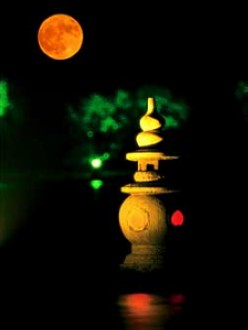
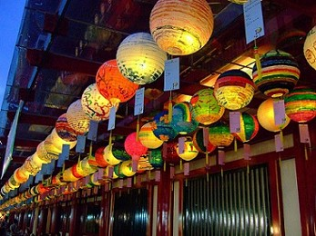
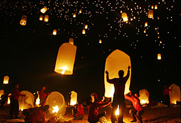
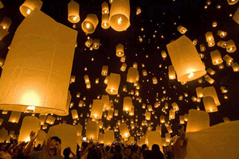

学佛必须出家吗？
冯冯
学佛必须出家吗？出家好还是在家好？
常有人提出这些问题，这是很不容易解答的。
从佛经来看，学佛的最终目的是成佛，佛陀常常劝人出家修行，佛经常见记载，跟随的弟子出家，甚至全家出家，现比丘相，天人皆大欢喜赞叹！
这样看来，佛陀是希望人人出家修行的，佛教一贯以来，认为出家修行是学佛的修行最佳途径，学佛必须辞亲割爱去出家修行，方可成佛。
近代的大师，例如太虚大师，也主张人人出家修行。当前的许多法师，也鼓吹出家。一般在家人，也都认为出家是修行的最佳方式，响往出家的无牵无挂，一无挂碍。文人歌诵出家人如何清净潇洒，闲云野鹤，枕泉漱石，观流云，听松涛，与世无争．山中无甲子，出家人诸漏都尽，永无烦恼，于是，不少人憧憬出家的出世境界。
另外有些人认为必须出家方可弘法度众生，于是很多人就像投军报国一般去出家。当然也有些人是逃避现实而出家的，也免不了有人出家是为了谋衣食，更有人披上僧衣去敛财，只做形式上的出家。例如，数年前，日本法庭判刑一个大和尚重刑，因为他非但从事假借佛教之名敛财，积聚数千万元自肥，又从事走私漏税，贩卖毒品，甚至开设妓院与淫业，多年累积漏税数亿元。像这样的极端例子，也非绝无仅有，在其他地区，也不鲜见，只是规模不同，各显神通，巧立名目！现代社会，科技猛，心灵却空虚，寻求安慰，遂信神怪，以致鱼目混珠之徒，得逞私欲，骗诈无辜，污染了真正的善良的修行人之清名，连累了真正的出家人！世人不察，怎办真伪？
佛陀希望人人出家修行，但并非叫人未经考虑就立即出家，追随佛陀的弟子，通常经过好几年的熟虑，通过多项的考验，才获准出家。因为出家是肩负重任弘法利众救世，不是隐居山林自做自了汉，更不是逃避现实，若经不起考验，出家修什么？追随佛陀最初的五位弟子，原是佛陀身为太子之时的随从，奉了父王净饭王之命，赶到鹿野，护卫太子，经过多年的考验，才正式出家，成为五比丘。后来的弟子群众，也都不是立即出家，而是追随及皈依佛陀多年，通过考验，才可以成为比丘与比丘尼，不是随便马虎就可以出家的。
中国佛教，早期的出家人，是从印度或西域来的，起先中土并无出家制度。可能最早的一位中土出家，是朝的道安法师，从儒者而成为比丘，也是经过考察与考验多年的．到了唐朝，对于出家，有空前的严格限制，任何人要出家，必须先经过官府笔试及面试，还需要地方绅士父老与官员推荐印证，朝廷考试合格，证明品学兼优，才得以剃度出家．著名的唐玄奘三藏法师，十二岁在朝廷面试合格，列为优等，又经官绅与佛教名师推荐，才得出家。以他的特殊优异品学，后来成为一代高僧，往印度取经，历经十九年，取经回国，翻译佛经，大开因明唯识之学，由他的弟子窥基大师发扬唯识宗派。玄奘大师所译出的“能断金刚经”，准确性比鸠摩罗什所译的“金刚经”为高，可惜现代流行版本却不是玄奘译本，而是鸠摩罗什译本。
出家制度，大约是到了梁武帝兴佛之时就流弊百出．梁武帝崇佛敬僧，供养僧人数十万人，兴建佛寺万所，出家人受到帝室尊崇，享用有如王侯，成为特权阶级．于是人人力谋出家，以图贵显，不择手段，贿赂买取出家文牒，奔走权贵之门，皇亲国戚之府，取得比丘身份，旋即又弄灌贪污，无所不为，出家制度己被破坏，佛教原意，也都荡然无存，佛教伦为迷信之神教．梁武帝亦因供养佛教的寺庙与僧人，必须横征暴敛，鱼肉人民，天怒人怒，终于引起部将侯景叛乱革命，推翻梁朝，诛杀武帝。现代人不知历史真相，只是邪信及迷信，他只是佞佛，而非真正实行佛教．他所作所为，名为敬佛，实为邪信邪行，唯一的贡献只是提倡吃素。他以暴君残酷治国，纵然吃素又有何功德？他只知佞佛敬僧，却不知爱民惜民，功不抵过。
从清末到现代，可说是已经全无古代的出家严格制度，有人因为失意，跑去山家，这是拜受“红楼梦”之赐，贾宝玉娶不到林黛玉就跑去出家，这算是出家修行吗？不幸开了例，很多人失意就跑去出家，自以为看破红尘，其实只是逃避现实的懦夫。有人为衣食而去出家，只不过是换上僧衣的俗人而已．为争香油红包供养而大打出手，为争庙产而诉讼，为争名利地位而斗争，种种诡诈，多多花样，把真正出家修行人的清誉都污染了，那种出家人，只不过是徒具形式，穿上僧衣的俗人而已．出家只不过是演戏，哪里做得到六根清净，哪里守得了任何戒律，那样的出家，还不如在家罢！
现代的出家，有些是很庄严隆重其事，有些却是随随便便，有些必须经过若干时间的考察与考验，而另一些则不须经过考试，甚至有随到随时落发剃度，有教无类。各处标准不同，国情有别，风俗岐异，出家的剃度也就未必符合原始佛教。因此有人带发修行数年仍未得剃度出家，却有人即时出家，披上袈裟，即时可以行道或招摇，往往离经叛道，言行都非佛教正信，每每误导众生。
立志出家，必须首先研习正信佛理佛教，立心正信不移，修行不懈，宏愿度己度人，以慈悲为怀，不存私心，不求名利，不求闻达，奉献身心，普度普济，服务众生，有此决心，才可出家．倘若只图个人成佛而不顾众生，那也是一种自私与障碍，绝不可能成佛．佛者，只是开悟之人，并非超神，若无慈悲愿行，虽悟亦难成佛，佛与菩萨愿行不可分离，其实一两面，菩提心与菩萨心是一而二，二而一。
也有不少人，自以为辞亲割爱，不要父母，不要亲人，跑去深山寺庙出家，青灯木鱼，暮鼓晨钟，熟诵经卷，就可以成佛，又可以广度众生，这是广大的慈悲。可是，一个人，连对自己的父母亲人都不慈悲，还讲什么对众生慈悲呢？自己跑去山林寺庙静坐诵经，忍心父母妻儿在家苦念与伤心哭泣，这样的出家，只是抛弃父母亲人而已，不信此种忍心狠心之人能够永久良心得安或能成佛。
倘若因失恋或失意，或灰心，或悲观，或避世，或为图山林之乐，无牵无挂而辞亲割爱去出家，那都不是正信佛教所为，那种种出家，非但摆不脱烦恼，而且还会有更多烦恼，因为追求的目的与境界难以得到。
古代印度社会，是落后的农业社会，生存的物质需求很低。出家人可以沿门托钵化缘，只求一饱，不必积蓄金钱，地带炎热，衣物但求简单蔽体遮羞，无需华裳重裘．现代社会是科技工业社会，物质生活的需求复杂，人人均必须辛劳工作，才得以支持生活所需，舟车飞机，衣食住行，都非沿门化缘所能获致，电脑，电视机，电话，医药医疗......样样都需金钱购买，出家人也不可能像佛陀师徒在印度之漫行乡野，就算能一步一拜，从南极拜到北极，又对于世界和平何补？
百丈禅师所立清规之一，是“一日不作一日不食”，就是规定出家比丘必须从事生产劳动，不能坐吃受人供养。可是现代出家人有谁能去下田耕种劳动？现代环境不许可耕种，同时出家人缺乏技能训练教育，难以从事现代科技工作，也没有任何工商会聘请比丘做工或比丘尼打电脑卡吧？不少现代科技教育出身的人士，出了家，就无用武之地，浪费了所学的科技才能，埋没于寺院，有些还有机会从事弘法工作，教育众生，大多只是成为唱念僧人，真是可惜，还不如不出家，把他们的才智科技贡献社会，更有意义！心存慈悲，多行布施，多行济度，有菩萨愿菩萨行，也就得证菩提，未必一定需要出家！
出家修行学佛，是非常庄严的事，可是时代不同，现代人不可能人人出家，若想出家，最好自己全盘冷静考虑清楚，为何出家？出家之后做何事？出家之后贡献大？抑或是在家更方便实行菩萨道？而且，也得看有无福缘可以出家。
原载《佛网》网站
2000 年 ── 2002 年